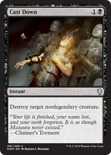
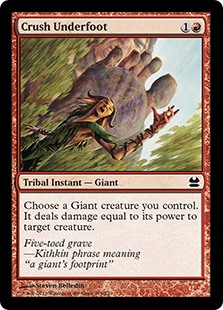
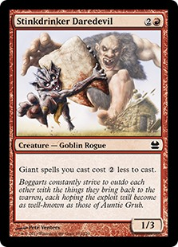
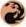

|  | Muy bien es hora de hablar de uno de los tipos de cartas mas utiles en el juego de Magic y si no me creen nada mas preguntelen a alguien cuyo oponente juegue azul y siempre deja un par de islas destapadas, para muchos de nosotros un dolor de cabeza, para los usuarios de los instants la clave es el timing, gracias a que el instant tiene la peculiaridad de poder jugarse en cualquier momento del duelo incluso en el turno del oponente lo que convierte al instant en una arma letal en las manos de los mas habilides jugadores, pero el destruir o contrarrestar el hechizo de un oponente no es la unica manera en la que un instant puede darte la ventaja, alterar los status de una criatura, encantamiento, artefacto, tierra o un planewalker son otros excelente usos para el instant ¿tu oponente tiene mucha vida? ¿muchas cartas en su mano, libreria o cementerio? ¿muchas criaturas? no te preocupes deja que tus instant hagan el trabajo sucio y sientate a mirar como tu oponente pide clemencia. |
|  |  | Existen como en este caso algunos pocos instants tribales, esto es un caso parecido al de la criaturas con caracteristicas de otro permanente, en el caso de los instants tribals los mismos afectaran el campo si algún permanente que este en juego interectua con el subtipo de la carta, en este caso es un instant giant, esto significa que si alguna habilidad se fuera a disparar o activar cuando se juega un spell gigante este instante activaria dichas circunstancias, por ejemplo crush underfoot es un instante-gigante y la habilidad del stinkdrinker daredevil dice que los costos de mana de los hechizos de gigante cuestan menos para jugarse en este caso el crush underfoot solo costaria  para jugarse |